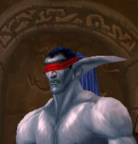

Syldur
Age : 110
Sexe : Homme
Race : Elfe
Faction : Alliance
Formation : Mage
Description : Description physique:
Syldur représente bien l'archétype physique de ceux de sa race: de haute taille, mince, peau clair, et longue chevelure blonde, d'où dépassent les deux longues oreilles pointues typique des Elfes de Quel'Thalas.
Actuellement, le physique elfique de Syldur est masqué sous une apparence magique d'humain.
Background:
Syldur, comme beaucoup de membres de sa race, a voué son existence aux arcanes en devenant mage. Il étudia d'abord la magie à Silvermoon, la capitale du Haut Royaume elfique de Quel'Thalas, durant son adolescence, puis, plus tard, partit étudier quelques années à Dalaran. Lors de la Seconde Guerre contre la Horde démoniaque, Syldur rejoignit les rangs de l'armée de l'Alliance avec d'autres mages elfes et humains. Il participa à la bataille finale contre le Portail Sombre, qui scella la défaite définitive de la Horde démoniaque.
A la veille de la Troisième Guerre, alors que le Conseil de Silvermoon décréta officiellement le retrait de Quel'Thalas de l'Alliance, Syldur, par amitié envers plusieurs magiciens humains qu'il rencontra lors de ses études à Dalaran et pendant la guerre contre les Orcs, décida de rester de son propre chef au sein des forces militaires de l'Alliance. Lors de l'invasion de Lordaeron par la Légion Ardente, Syldur fit partie de l'expédition menée par Jaina Proudmoore qui vogua jusqu'aux ancestrales terres de Kalimdor. Le mage elfe prit part à la bataille du Mont Hyjal aux côtés des Elfes de la Nuit et des Orcs.
Lors de cette bataille, Syldur fit la connaissance de quelques Orcs, et découvrit à travers eux combien la Horde avait changé, et comment elle s'était à présent rebellée contre ses anciens maîtres démons et comment elle avait retrouvé ses nobles racines chamanistiques.
Après la défaite de la Légion, Syldur partit fonder la citadelle de Theramore avec le reste de l'expédition de Jaina. Plus tard, quand Thrall attaqua Theramore et tua le père de Jaina, l'Amiral Delin Proudmoore, beaucoup d'habitants de l'île commencèrent à douter de l'alliance avec la Horde, et commencèrent à se montrer hostiles envers leurs voisins Orcs, Taurens et Trolls de la Jungle. Mais ce ne fut pas le cas de Syldur, qui considérait l'amiral comme un imbécile borné qui n'avait pas voulu croire combien les Orcs avaient changés depuis la Seconde Guerre.
Syldur est toujours fidèle à Jaina Proudmoore, et espère un jour pouvoir voir se réconcilier Alliance et Horde. Espérant pouvoir refonder Quel'thalas ou un nouveau royaume pour son peuple, et surtout trouver un moyen de délivrer son peuple de sa Soif de magie, dont elle souffre depuis la disparition du Puits de Soleil de Quel'Thalas, Syldur s'est mis à arpenter les terres de Kalimdor et des Royaumes de l'Est, tentant de ralier à sa cause le plus de hauts elfes et elfes de sang possibles...
C'est ainsi que naquit la Confrérie des Fils de Quel'Thalas...
Plus d'infos sur Syldur >>>Lire les 5 récits de Syldur >>>
Nightblade
Age : Inconnu
Sexe : Homme
Race : Elfe
Faction : Alliance
Formation : Voleur
Description : Bien Né, chasseur de démon, prisonnier, aventurier... Nightblade a été tour à tour tous ces personnages.
Nul ne se souvient de son véritable nom d'autrefois, pas même lui. Tout ce que l'on sait, c'est qu'il y a dix mille ans de cela, Nightblade faisait partie de la caste des Biens Nés, un groupe d'aristocrates magiciens et favoris de la Reine Azshara, la souveraine des elfes de la nuit.
Nightblade était un fervent adepte de l'utilisation des arcanes, mais quand sa reine et les siens se mirent à vouloir aider le sombre seigneur Sargeras a entrer en ce monde, Nightblade s'opposa à eux; aider cette entité aussi mystérieuse que puissante ne pouvait amener que ténèbres et désolation sur le merveilleux empire Kaldorei qu'ils avaient mis tant d'années à bâtir.
Nightblade trahit donc les siens, et se mit au service des forces de Malfurion Stormrage. Rituellement, lancien Bien Né sôta la vue à laide de lames imbues dénergies démoniaques, et devint un chasseur de démon. Cest là quil prit son nouveau nom : Nightblade, la Lame de la Nuit.
Le chasseur de démon combattit aux côtés des fidèles de larchidruide, et lors de la bataille finale qui opposa les démons et les Biens Nés aux elfes de la nuit et aux dragons, Nightblade engagea un titanesque combat contre un puissant sorcier eredar. La terrible bataille, gigantesque défouloir dénergies arcaniques, semblait ne jamais vouloir prendre fin. Quand Nightblade parvint enfin à terrasser son adversaire, il était lui-même cruellement blessé. Mais pire que cela : le combat contre le démon semblait lavoir complètement vidé de ses énergies magiques, et consumé son être intérieur
Il était devenu totalement tari, vide, déconnecté des courants magiques. Comme si le feu magique avait complètement brûlé son essence, et quil ne restait plus rien en lui pour le rallumer.
Lorsque la Guerre des Anciens sacheva, Nightblade sentit en lui un grand vide : il avait soif de magie, il avait besoin de la sentir couler en lui une fois de plus. Mais rien ny faisait, les arcanes se refusaient à lui. Frustré, ignorant complètement les interdits sur la magie formulés par Malfurion, Nightblade entreprit avec ferveur un grand nombres de recherches et dexpériences magiques, dans le but de retrouver ses pouvoirs, fouillant dans les archives et les travaux des Biens Nés. Quand Illidan créa le nouveau Puits dEternité, Nightblade devint complètement hystérique, dévoré par sa soif et sa dépendance.
Les druides Kaldorei prirent peur des actions de lancien Bien Né. Incapable de parvenir à le raisonner, ils se résolurent à lenfermer sous terre pour léternité. Nightblade fut placé sous la surveillance des Gardiennes, une sorte de police très spéciale, complètement indépendante des Sentinelles.
Nightblade fut enfermé par celles-ci dans les sous-sols de la prison de Kaldanil en Ashenvale
Des siècles de ténèbres sécoulèrent pour le chasseur de démon, des siècles dobscurité sans fin
***
Quatre années après la Bataille du Mont Hyjal, des murmures se mirent à courir parmi les feuillages des forêts de Kalimdor ; dans lantique prison de Kaldanil, on aurait retrouvé es Gardiennes sauvagement massacrées
Et une cellule désormais vide
terriblement vide
Plus d'infos sur Nightblade >>>Lire les 3 récits de Nightblade >>>